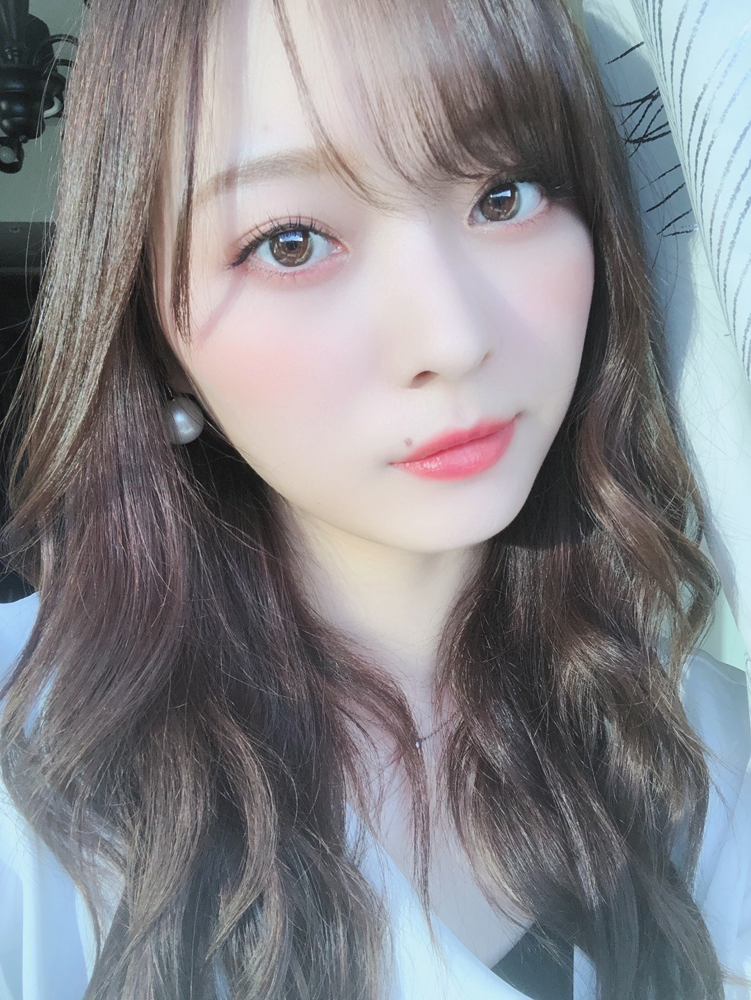
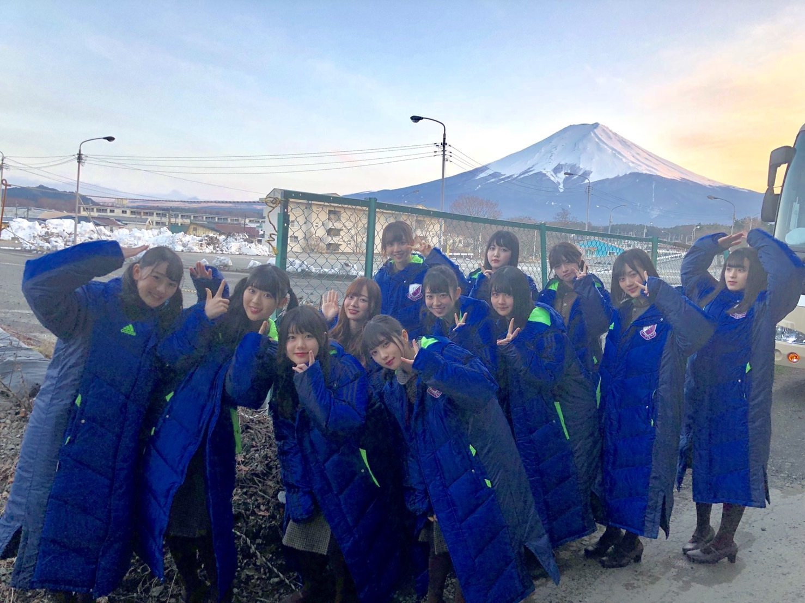
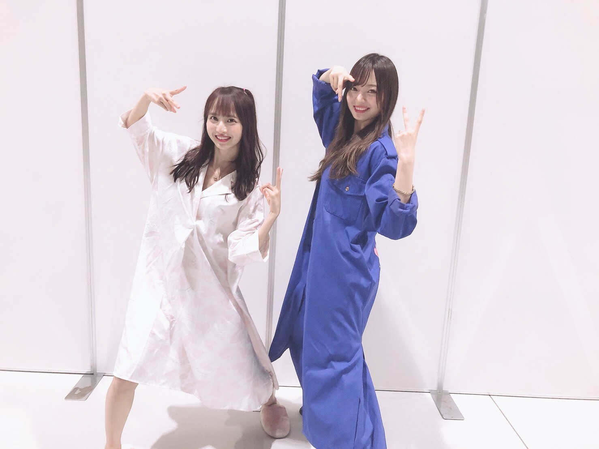
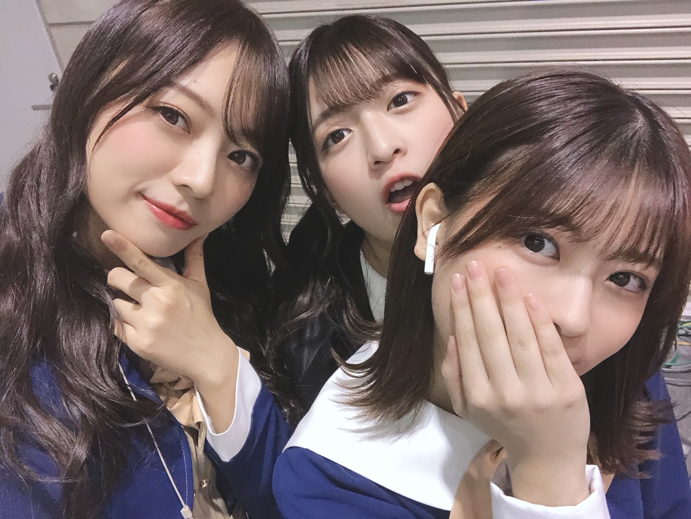
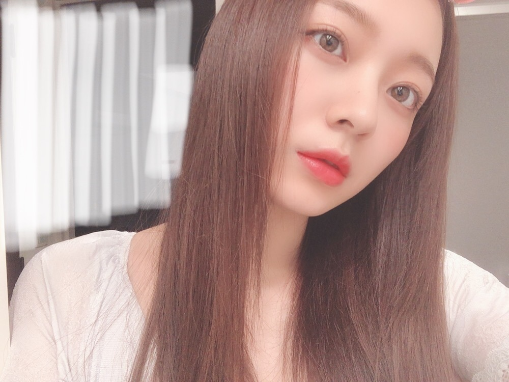

そういえば空はいつだって綺麗だったなあ

天気が良かった日☀︎
雨の匂いは嫌いではないけど
やっぱり晴れると気分がいい。
光で目覚める朝が好きです〜
わたし音にかなり敏感なので
本当にちっさな物音でもすぐ起きてしまう、、
良いのか悪いのか分かりませんが
悪夢をよく見るのと朝方に一度目覚めてしまいます〜
さて！
乃木坂46時間TVの放送が決まりました！
6月19日（金）19:00〜
6月21日（日）〜17:00 の放送になります。
ABEMAさん独占生放送です！
第１回、２回目は視聴者として観ていて、
あの時の私はバイトしながら
高校生活を送っていましたが、
バイトから帰宅し、すぐに46時間TVを観て癒されていました。懐かしい。
全員で繋いで繋いで、協力し合って
完走するあの達成感が
とてつもなく好きです。
前回はまだまだ至らない点も多かったので
今回はお役に立てるように頑張ります！
色々挑戦したいですし
自分自身の色んな表情を引き出せたらなと思ってます☀︎
何を手につける時も、
先に緊張が来てしまってテンパって終わるのが多いわたしなので
緊張はもちろん持ちつつ、肩の力は抜いて挑めるよう頑張りますね︎︎︎︎✌︎
自粛期間、
テレビやドラマ、映画だったり
その他色んなことに時間を使ってきましたが
そんな生活の中で
誰かとの電話だったり生配信番組を観たり
生放送のテレビを観たり、
生で誰かと繋がり同じ時間を共有することってこんなにも気持ちが救われるのかと
私自身すごく感じることが多くてですね。
46時間TVも生放送なので
こんな時だからこそ、
皆様の気持ちに寄り添えるような番組をみんなで作っていけたらなと思います！
お楽しみに！

前回の46時間TVの写真探したら
数枚しかなかった、、
何してるんだわたし、、
世界中の隣人よ
MV公開されました。
一人一人離れた場所での撮影、
ひとつに合わさった作品。
皆様にまた新しい形で届けられたこと、
とても嬉しく思います。
寂しくなったとき、
何度でも見返そうと思います☀︎
スタッフさん達の想いが詰まった曲。
寂しさなんて吹き飛びます︎︎︎︎✌︎
皆様の心に寄り添うような
そんな一曲になれたら嬉しいです。

楽しそう（笑）
皆様に早くお会い出来る日が来ること
願っています。
直接声が聞きたいです ( .. )
with ７月号発売中です！
オフィスカジュアルの進化がとまらない！
と題しまして
今までの乃木坂OLプロジェクトのカットが
たくさん掲載されています！
ぜひぜひチェックよろしくです☀︎

会いたいねえ( .. )
明日 TOKYO FM
JUMP UP MELODIES TOP20に
出演させていただきます！
久保とふたりです☀︎
久しぶりのラジオ出演！
14時台に登場しますのでぜひ聴いてください〜
今日も運動して半身浴して
しっかり汗かいて
眠りにつきましょうかね〜
また更新します

おやすみなさい
では。
少しでも多くの笑顔を☀︎
笑顔のきっかけになるようなものを
届けられる人になりたいと願います
Original：https://www.nogizaka46.com/s/n46/diary/detail/56314?ima=4938&cd=MEMBER